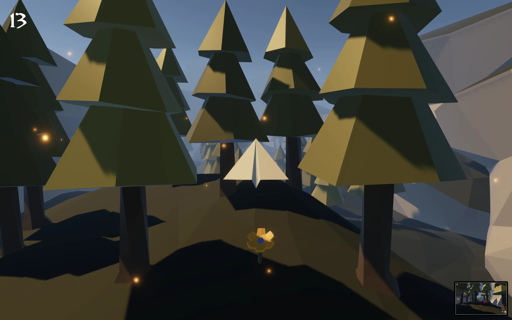
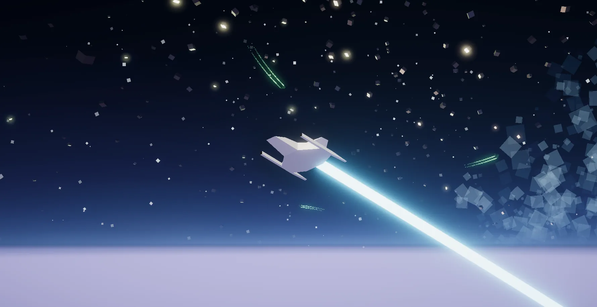
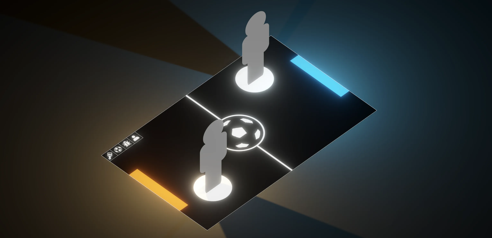

iColtrane
MIDI instrument for exploring John Coltrane's circle of fifths diagram
I'm a security engineer on the Chrome Security team, with way too many hobbies on the side. Anything that involves the intersection of art and technology, I'm there for it. Check out some of my projects below.

Low-poly fly-em-up created to learn FMOD

Low-poly blast-em-up created in 48 hours for Ludum Dare
MIDI instrument for exploring John Coltrane's circle of fifths diagram

Interactive floor projection that adapts to brain activity

Hands-free live music performance controller